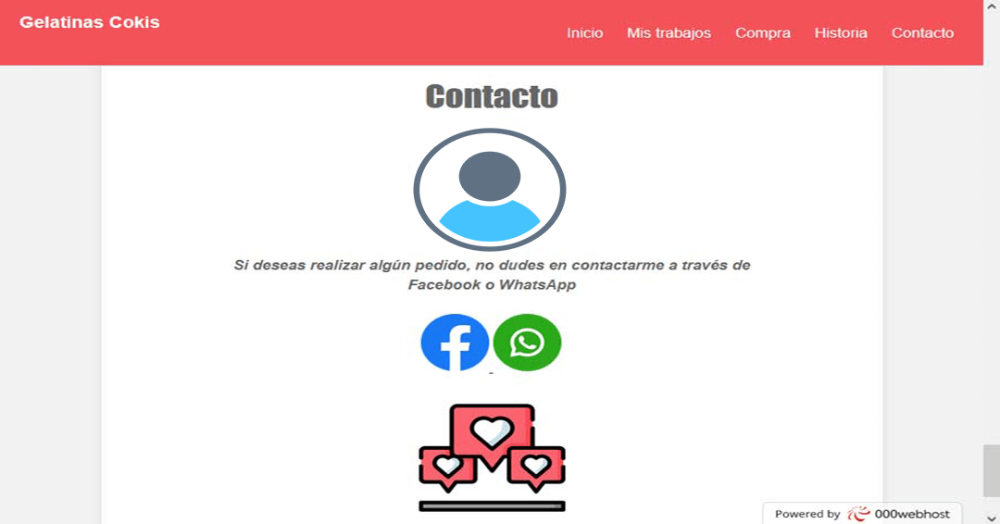

GELATINAS COKIS
Para este proyecto, trabajé en el desarrollo de un pequeño proyecto llamado "Gelatinas Cokis", que tiene como objetivo dar a conocer tanto la historia como los trabajos de este negocio local en su búsqueda por expandirse.
Mi labor en este proyecto fue crear un "portafolio" que presentara la historia del negocio y sus trabajos actuales. Para lograrlo, fue necesario realizar algunas preguntas al dueño, como:
- ¿Cuál es el principal objetivo del negocio?
- ¿Cuál es la historia del negocio?
- ¿Cómo se pueden realizar pedidos?
- ¿Por qué medios de contacto pueden los clientes hacer pedidos?
- ¿Cuáles son los trabajos más recientes y destacados?
- ¿Cómo fueron los primeros trabajos?
Estas preguntas sirvieron para crear una galería que muestra los productos del cliente y, al mismo tiempo, comparar los trabajos actuales con los primeros.
El cliente también solicitó un diseño sencillo que reflejara los tonos color rosa de sus trabajos. Por lo tanto, el sitio web fue desarrollar por medio de herramientas como HTML, para la estructura del sitio y CSS para los diseños del mismo. El sitio se organizó en los siguientes apartados:
- Inicio
- Mis trabajos
- Compra
- Historia
- Contacto
A continuación, se muestran los apartados del sitio web.
|
Se colocó un encabezado que muestra el nombre del negocio y un atractivo carrusel de imágenes para exhibir el trabajo destacado. |
|
|---|---|
|
En este apartado se muestra el inicio del sitio web y los objetivos del negocio. |
|

|
En esta sección, se presentan algunos sus trabajos más recientes y destacados. |
|
En esta sección, se encuentrán los pasos a seguir para realizar una compra de forma sencilla y rápida. |
|
|
"En esta sección, se cuenta la historia del negocio y se puede explorar la galería que incluye sus primeros trabajos destacados. |
|
|
Por último, se han añadieron las opciones de contacto para poder comunicarse fácilmente con Gelatinas Cokis. |
 |
El sitio web del negocio puede encontrase por medio del siguiente link: